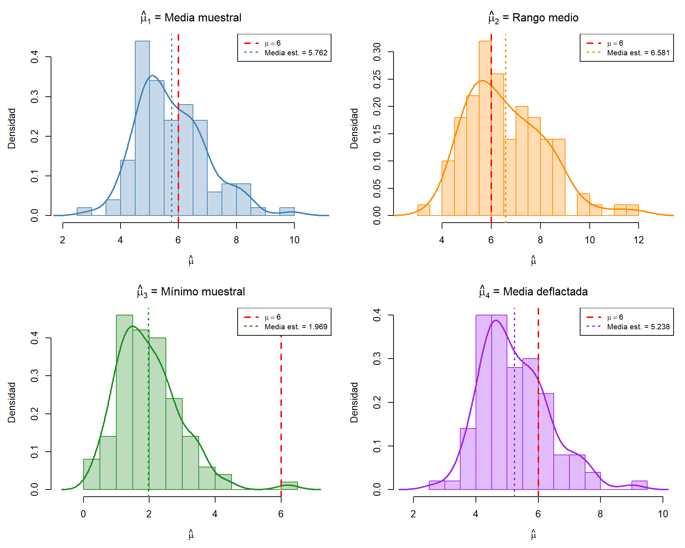
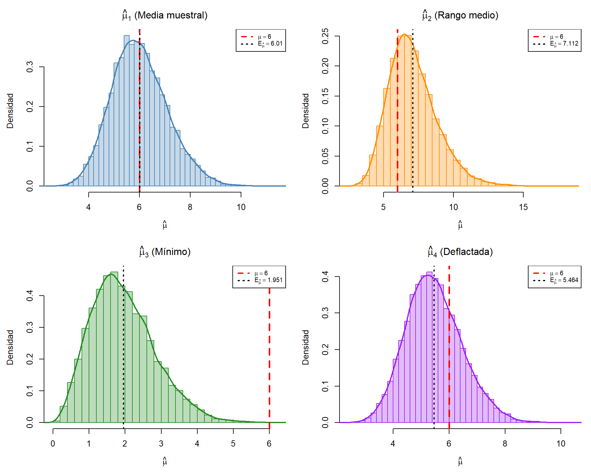
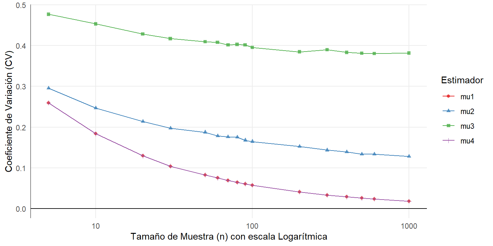
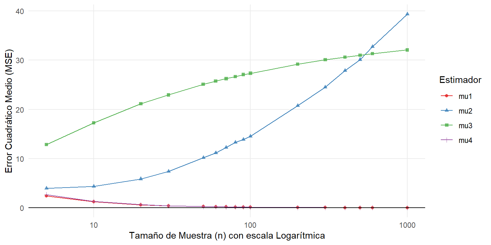
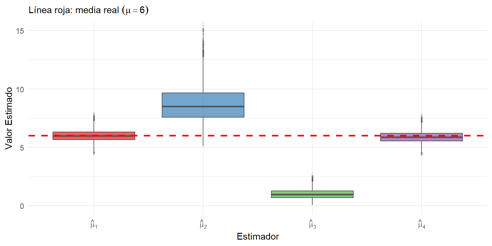

2 Propiedades de los estimadores
2.1 Problema 2
Un centro de atención médica registra el tiempo de espera (en minutos) de los pacientes antes de ser atendidos. Se sabe que estos tiempos siguen una distribución Gamma con parámetros conocidos \(\alpha = 3\) (forma) y \(\sigma = 2\) (escala). El parámetro que se supone desconocido en este problema es la media poblacional \(\mu = \alpha\sigma\).
Sea \(X_1, X_2, \ldots, X_n\) una muestra aleatoria de tamaño \(n\) independiente e idénticamente distribuida extraída de esta población. Se proponen los siguientes estimadores para \(\mu\):
- Estimador 1:
\[\hat{\mu}_1 = \frac{1}{n}\sum_{i=1}^{n} X_i\]
- Estimador 2:
\[\hat{\mu}_2 = \frac{\min(X_1, \ldots, X_n) + \max(X_1, \ldots, X_n)}{2}\]
- Estimador 3:
\[\hat{\mu}_3 = X_{(1)}\]
- Estimador 4:
\[\hat{\mu}_4 = \frac{1}{n+1}\sum_{i=1}^{n} X_i\]
Realiza las siguientes actividades:
2.1.1 Simulación de estimadores
- Genera 100 muestras de tamaño \(n = 10\) de una distribución Gamma con
parámetros \(\alpha = 3\) y \(\sigma = 2\). Utiliza la función
rgamma(n, shape = alpha, scale = sigma)de R y establece una semilla como por ejemploset.seed(123)para asegurar la reproducibilidad de los resultados. - Para cada muestra, calcula los estimadores correspondientes. Luego, grafica los resultados utilizando una curva de densidad o un histograma de densidades para cada estimador.
- Realiza una interpretación de los gráficos obtenidos.
Sea \(X \sim \text{Gamma}(\alpha = 3, \sigma = 2)\). La media poblacional es: Se proponen cuatro estimadores para \(\mu\) y se evalúan mediante simulación.
\[\mu = \alpha\sigma = 3 \times 2 = 6\]
Además, la varianza poblacional es \(\text{Var}(X) = \alpha\sigma^2 = 3 \times 4 = 12\), por lo que la varianza teórica de la media muestral es:
\[\text{Var}(\bar{X}) = \frac{\alpha\sigma^2}{n} = \frac{12}{n}\]
Este valor servirá como referencia para evaluar los resultados de la simulación.
| Estimador | Expresión | Descripción |
|---|---|---|
| \(\hat{\mu}_1\) | \(\frac{1}{n}\sum_{i=1}^{n} X_i\) | Media muestral |
| \(\hat{\mu}_2\) | \(\frac{\min(X) + \max(X)}{2}\) | Punto medio del rango |
| \(\hat{\mu}_3\) | \(X_{(1)}\) | Mínimo muestral |
| \(\hat{\mu}_4\) | \(\frac{1}{n+1}\sum_{i=1}^{n} X_i\) | Media muestral deflactada |
Generamos 100 muestras de tamaño \(n = 10\) de una distribución Gamma con parámetros \(\alpha = 3\) y \(\sigma = 2\). En la Tabla 2.1 vemos los resultados de las primeras 20 muestras.
| Muestra | \(\hat{\mu}_1\) (Media) | \(\hat{\mu}_2\) (Rango medio) | \(\hat{\mu}_3\) (Mínimo) | \(\hat{\mu}_4\) (Deflactada) |
|---|---|---|---|---|
| 1 | 6.4702 | 7.3882 | 3.3847 | 5.8820 |
| 2 | 6.7066 | 8.4500 | 0.4393 | 6.0969 |
| 3 | 4.9784 | 5.5207 | 1.0845 | 4.5258 |
| 4 | 6.2519 | 8.6061 | 2.3318 | 5.6835 |
| 5 | 7.5893 | 7.0705 | 2.2468 | 6.8994 |
| 6 | 6.8836 | 7.4928 | 1.1165 | 6.2578 |
| 7 | 4.5842 | 6.5572 | 1.5524 | 4.1675 |
| 8 | 4.8902 | 4.7450 | 1.0296 | 4.4457 |
| 9 | 5.9502 | 6.4525 | 3.2849 | 5.4092 |
| 10 | 9.9071 | 9.5913 | 6.2026 | 9.0065 |
| 11 | 4.9403 | 5.5895 | 1.4478 | 4.4912 |
| 12 | 5.6921 | 4.7911 | 1.5612 | 5.1747 |
| 13 | 5.0393 | 6.4394 | 2.6110 | 4.5812 |
| 14 | 5.8997 | 5.7406 | 1.0750 | 5.3634 |
| 15 | 5.5948 | 6.3841 | 2.6859 | 5.0861 |
| 16 | 4.9014 | 5.0762 | 1.7499 | 4.4558 |
| 17 | 6.1174 | 8.2285 | 1.2180 | 5.5613 |
| 18 | 4.9271 | 4.4418 | 1.1172 | 4.4792 |
| 19 | 4.9728 | 5.2965 | 2.2818 | 4.5207 |
| 20 | 7.6879 | 11.9893 | 2.5100 | 6.9890 |
A continuación en la Tabla 2.2, veremos algunas estadísticas de cada uno de los estimadores.
| Estimador | Media estimada | Sesgo (\(E[\hat{\mu}] - \mu\)) | Varianza | MSE | Mediana |
|---|---|---|---|---|---|
| \(\hat{\mu}_1\) | 5.7618 | -0.2382 | 1.4359 | 1.4783 | 5.5261 |
| \(\hat{\mu}_2\) | 6.5813 | 0.5813 | 2.5776 | 2.8896 | 6.3794 |
| \(\hat{\mu}_3\) | 1.9689 | -4.0311 | 0.9426 | 17.1833 | 1.7940 |
| \(\hat{\mu}_4\) | 5.2380 | -0.7620 | 1.1867 | 1.7555 | 5.0237 |
Nótese que la varianza teórica de \(\hat{\mu}_1 = \bar{X}\) es \(\text{Var}(\bar{X}) = \alpha\sigma^2/n = 12/10 = 1.2\), valor que puede compararse con la varianza empírica reportada en la Tabla 2.2. La diferencia entre ambos valores se atribuye a la variabilidad inherente de utilizar solo \(B = 100\) réplicas.
En la Figura 2.1 se visualizan los resultados utilizando un histograma de densidades para cada estimador.

Figure 2.1: Densidades estimadas de los cuatro estimadores
Podemos resaltar lo siguiente:
\(\hat{\mu}_1\) (Media muestral): Su densidad se centra alrededor de \(\mu = 6\) con dispersión moderada. Es un estimador insesgado, ya que \(E[\bar{X}] = \mu\). Presenta la menor varianza entre los cuatro, lo que lo convierte en el más eficiente. Su MSE es el menor porque combina sesgo nulo con baja varianza.
\(\hat{\mu}_2\) (Rango medio): La densidad se sitúa cercana a \(\mu = 6\) pero con mayor dispersión que \(\hat{\mu}_1\). Su sesgo es pequeño pero no nulo, ya que el rango medio no es un estimador insesgado para la media de una Gamma (la distribución no es simétrica). Su varianza y MSE son mayores que los de \(\hat{\mu}_1\).
\(\hat{\mu}_3\) (Mínimo muestral): Su densidad se desplaza marcadamente a la izquierda de \(\mu = 6\). Es un estimador fuertemente sesgado (\(E[X_{(1)}] \ll \mu\)), ya que el mínimo de la muestra siempre subestima la media. Su MSE es el mayor de los cuatro debido a la combinación de sesgo grande y varianza considerable. Es el peor estimador de los propuestos.
\(\hat{\mu}_4\) (Media deflactada): Su densidad tiene la misma forma que la de \(\hat{\mu}_1\) pero desplazada a la izquierda, ya que \(\hat{\mu}_4 = \frac{n}{n+1}\hat{\mu}_1\). Es un estimador sesgado negativamente con sesgo teórico \(-\mu/(n+1)\). Aunque su varianza es ligeramente menor que la de \(\hat{\mu}_1\), su MSE es mayor debido al sesgo sistemático.
De lo anterior, tenemos que el estimador \(\hat{\mu}_1\) (media muestral) es el mejor estimador entre los propuestos, ya que es insesgado (se verificará más adelante), tiene la menor varianza y el menor error cuadrático medio. Esto es consistente con el hecho de que la media muestral es el estimador de máxima verosimilitud para la media de una distribución Gamma cuando el parámetro de forma \(\alpha\) es conocido. En efecto, si \(\alpha\) es conocido, el MLE de \(\sigma\) es \(\hat{\sigma}_{\text{MLE}} = \bar{X}/\alpha\), por lo que el MLE de \(\mu = \alpha\sigma\) es \(\alpha \cdot (\bar{X}/\alpha) = \bar{X}\) (véase Casella & Berger, Statistical Inference, 2nd ed., Ejemplo 7.2.7).
2.1.2 Insesgadez
- Mediante una simulación computacional, estima la media de cada estimador y compárala con el valor verdadero de la media de la población.
- Realiza un análisis utilizando gráficos y las estadísticas pertinentes para determinar cuál de los estimadores es el menos sesgado.
Sabemos que un estimador \(\hat{\mu}\) es insesgado si \(E[\hat{\mu}] = \mu\). El sesgo se define como:
\[\text{Sesgo}(\hat{\mu}) = E[\hat{\mu}] - \mu\]
Para la distribución \(\text{Gamma}(\alpha = 3, \sigma = 2)\), la media poblacional es \(\mu = \alpha\sigma = 6\).
- \(\hat{\mu}_1 = \bar{X}\): Por linealidad de la esperanza:
\[E[\hat{\mu}_1] = E\!\left[\frac{1}{n}\sum_{i=1}^{n}X_i\right] = \frac{1}{n}\sum_{i=1}^{n}E[X_i] = \mu \implies \text{Sesgo} = 0\]
\(\hat{\mu}_2 = \frac{X_{(1)} + X_{(n)}}{2}\): Para distribuciones asimétricas (como la Gamma), el punto medio del rango no es insesgado. En general \(E[\hat{\mu}_2] \neq \mu\), y el sesgo depende de la asimetría de la distribución.
\(\hat{\mu}_3 = X_{(1)}\): El mínimo muestral siempre subestima la media. Para \(n = 10\) y \(\text{Gamma}(3, 2)\), su esperanza es considerablemente menor que \(\mu = 6\), produciendo un sesgo negativo grande.
\(\hat{\mu}_4 = \frac{1}{n+1}\sum_{i=1}^{n}X_i\): Se puede escribir como \(\hat{\mu}_4 = \frac{n}{n+1}\bar{X}\), entonces:
\[E[\hat{\mu}_4] = \frac{n}{n+1}\mu \implies \text{Sesgo} = -\frac{\mu}{n+1} = -\frac{6}{11} \approx -0.5455\]
Para estimar el sesgo empíricamente, se generan \(B = 10{,}000\) muestras de tamaño \(n = 10\) y se calcula cada estimador en cada muestra. La media de las \(B\) réplicas aproxima \(E[\hat{\mu}]\) por la Ley de los Grandes Números como muestra la Tabla 2.3.
| Estimador | Media estimada | Sesgo (\(E[\hat{\mu}] - \mu\)) |
|---|---|---|
| \(\hat{\mu}_1\) | 6.0099 | 0.0099 |
| \(\hat{\mu}_2\) | 7.1120 | 1.1120 |
| \(\hat{\mu}_3\) | 1.9511 | -4.0489 |
| \(\hat{\mu}_4\) | 5.4635 | -0.5365 |
En el gráfico de la Figura 2.2, se puede observar la convergencia o no convergencia de la media de cada estimador a la media teórica, para la simulación con \(B=10000\) muestras de tamaño \(n=10\).

Figure 2.2: Convergencia del sesgo estimado conforme aumenta B
Podemos observar que:
\(\hat{\mu}_1\) (Media muestral): Su media estimada prácticamente coincide con \(\mu = 6\) y su sesgo es cercano a cero. La densidad se centra simétricamente sobre la línea roja. Es insesgado, consistente con el resultado teórico \(E[\bar{X}] = \mu\). En el gráfico de convergencia, su sesgo oscila alrededor de cero sin alejarse.
\(\hat{\mu}_2\) (Rango medio): Presenta un sesgo positivo pequeño. Esto se debe a la asimetría positiva de la distribución Gamma: la cola derecha empuja al máximo \(X_{(n)}\) más lejos de la media que lo que el mínimo \(X_{(1)}\) se acerca, haciendo que \(\frac{X_{(1)} + X_{(n)}}{2} > \mu\) en promedio. No es insesgado, pero su sesgo es moderado.
\(\hat{\mu}_3\) (Mínimo muestral): Es el estimador más sesgado. Su media estimada es notablemente inferior a \(\mu = 6\) y su densidad se concentra muy a la izquierda de la línea roja. El sesgo es negativo y grande, ya que el mínimo de la muestra siempre subestima la media. En el gráfico de barras y el de convergencia se aprecia claramente que este sesgo es estable y no tiende a cero.
\(\hat{\mu}_4\) (Media deflactada): Tiene un sesgo negativo moderado y estable, cercano a \(-\mu/(n+1) = -6/11 \approx -0.5455\). Su densidad se desplaza a la izquierda de \(\mu = 6\) de forma uniforme. El sesgo es sistemático y predecible.
| Posición | Estimador | Sesgo | |
|---|---|---|---|
| 1° | \(\hat{\mu}_1\) | \(\approx 0\) | Insesgado |
| 2° | \(\hat{\mu}_2\) | Pequeño | Levemente sesgado |
| 3° | \(\hat{\mu}_4\) | Moderado | Sesgado (predecible) |
| 4° | \(\hat{\mu}_3\) | Grande | Fuertemente sesgado |
2.1.3 Consistencia
- Mediante una simulación computacional, incrementa el tamaño muestral desde \(n = 10\) hasta \(n = 1{,}000\), utilizando un conjunto de valores representativos como 5, 10, 20, 30, 50, 60, 70, 80, 90, 100, 200, 300, 400, 500, 600, entre otros. Grafica cómo cambia la variabilidad relativa de los estimadores a medida que aumenta el tamaño muestral.
- Realiza un análisis utilizando gráficos y las estadísticas necesarias para evaluar la consistencia de los estimadores.
Un estimador \(\hat{\theta}_{n}\) es consistente para \(\theta\) si converge en probabilidad al verdadero valor del parámetro cuando el tamaño muestral \(n\) tiende a infinito. Formalmente:
\[\hat{\theta}_n \xrightarrow{P} \theta \quad \Longleftrightarrow \quad \lim_{n\to \infty} P\!\left(\left\vert \hat{\theta}_{n} - \theta \right\vert > \varepsilon\right) = 0, \quad \forall\, \varepsilon > 0\]
En otras palabras, al aumentar \(n\), la distribución del estimador se concentra alrededor de \(\theta\). Una condición suficiente para la consistencia es que tanto el sesgo como la varianza del estimador tiendan a cero, o equivalentemente, que el error cuadrático medio (MSE) tienda a cero:
\[\text{MSE}(\hat{\theta}_n) = \text{Sesgo}^2(\hat{\theta}_n) + \text{Var}(\hat{\theta}_n) \xrightarrow{n \to \infty} 0\]
A continuación, mediante simulación analizaremos cómo se comporta la variabilidad de los cuatro estimadores propuestos al incrementar el tamaño muestral. Utilizaremos dos métricas complementarias: el Coeficiente de Variación (CV), que mide la variabilidad relativa del estimador respecto a su propia media, y el Error Cuadrático Medio (MSE) respecto al verdadero parámetro \(\mu = 6\), que captura simultáneamente el sesgo y la varianza.
| Tamaño de Muestra (n) | CV (\(\hat{\mu}_1\)) | CV (\(\hat{\mu}_2\)) | CV (\(\hat{\mu}_3\)) | CV (\(\hat{\mu}_4\)) |
|---|---|---|---|---|
| 10 | 0.1837 | 0.2466 | 0.4531 | 0.1837 |
| 50 | 0.0829 | 0.1875 | 0.4094 | 0.0829 |
| 100 | 0.0575 | 0.1647 | 0.3954 | 0.0575 |
| 500 | 0.0257 | 0.1335 | 0.3811 | 0.0257 |
| 1000 | 0.0182 | 0.1283 | 0.3816 | 0.0182 |
| Tamaño de Muestra (n) | MSE (\(\hat{\mu}_1\)) | MSE (\(\hat{\mu}_2\)) | MSE (\(\hat{\mu}_3\)) | MSE (\(\hat{\mu}_4\)) |
|---|---|---|---|---|
| 10 | 1.2193 | 4.3601 | 17.2662 | 1.2930 |
| 50 | 0.2472 | 10.2062 | 25.0844 | 0.2526 |
| 100 | 0.1190 | 14.5331 | 27.3251 | 0.1204 |
| 500 | 0.0239 | 30.1124 | 30.9902 | 0.0239 |
| 1000 | 0.0120 | 39.3213 | 32.0667 | 0.0120 |

Figure 2.3: Evolución de consistencia (CV)

Figure 2.4: Evolución del MSE respecto a \(\mu = 6\) al incrementar n
El análisis de la consistencia de los estimadores propuestos se fundamenta en observar su comportamiento asintótico; es decir, evaluar qué sucede con su variabilidad y su MSE a medida que el tamaño de la muestra (\(n\)) tiende a infinito. Un estimador consistente debe converger en probabilidad al verdadero parámetro poblacional (en este caso, \(\mu = 6\)), lo que implica que su MSE respecto a \(\mu\) debe tender a cero.
Al analizar los valores numéricos presentados en la Tabla 2.4 (CV) y la Tabla 2.5 (MSE), se evidencia un contraste marcado en la evolución de los cuatro estimadores cuando \(n\) se incrementa desde 10 hasta 1000:
Estimadores (\(\hat{\mu}_1\) y \(\hat{\mu}_4\)): Ambos muestran una reducción sistemática y monótona tanto en su CV como en su MSE. Para un tamaño muestral grande (\(n = 1000\)), sus valores de MSE son sumamente bajos, acercándose cada vez más a cero. Esto indica que la variabilidad de las estimaciones se desvanece y se concentran fuertemente alrededor del verdadero parámetro, cumpliendo así con la propiedad de consistencia. Para \(\hat{\mu}_1\), esto se respalda directamente por la Ley Fuerte de los Grandes Números. Para \(\hat{\mu}_4 = \frac{n}{n+1}\bar{X}\), dado que \(\frac{n}{n+1} \to 1\) y \(\bar{X} \xrightarrow{P} \mu\), el teorema de Slutsky garantiza que \(\hat{\mu}_4 \xrightarrow{P} \mu\).
(\(\hat{\mu}_2\), rango medio): Su CV y MSE presentan valores altos y carecen de una tendencia decreciente sostenida. Esto se debe a que la distribución Gamma tiene soporte \((0, \infty)\), es decir, soporte no acotado superiormente. En consecuencia, \(X_{(n)} = \max(X_1, \ldots, X_n) \xrightarrow{c.s.} \infty\) cuando \(n \to \infty\) (ya que para cualquier \(M > 0\), se tiene \(P(X > M) > 0\), y con infinitas observaciones independientes el máximo diverge con probabilidad 1). Aunque \(X_{(1)} \xrightarrow{c.s.} 0\), el rango medio \(\frac{X_{(1)} + X_{(n)}}{2}\) diverge porque \(X_{(n)}\) domina. Por tanto, \(\hat{\mu}_2\) es inconsistente.
(\(\hat{\mu}_3\), mínimo muestral): Aunque el CV del mínimo decrece a medida que aumenta la muestra, la Tabla 2.5 revela que su MSE no tiende a cero, sino que se estabiliza en un valor positivo. Esto se debe a que \(X_{(1)} \xrightarrow{c.s.} \inf\{x : F(x) > 0\} = 0\) para la distribución Gamma (cuyo soporte es \((0, \infty)\)). Es decir, el mínimo converge al límite inferior del soporte (\(0\)), no a la media poblacional (\(\mu = 6\)). Por tanto, es un estimador sesgado asintóticamente y no es consistente para la media.
Estas conclusiones numéricas se corroboran visualmente en la Figura 2.3 (CV) y la Figura 2.4 (MSE). Al utilizar una escala logarítmica en el eje horizontal para los tamaños muestrales, los gráficos revelan claramente cómo las curvas de los Estimadores 1 y 4 descienden suavemente hasta converger hacia la línea base (\(y=0\)).
Por el contrario, la trayectoria del Estimador 2 exhibe fluctuaciones erráticas y se mantiene alejada del cero en MSE, ilustrando gráficamente su divergencia. El Estimador 3 muestra un MSE que se estabiliza en un valor positivo, reflejando su convergencia hacia \(0 \neq \mu\).
Basados en la convergencia observada tanto en las tablas como en los gráficos de simulación computacional, se determina que solo el Estimador 1 (la media muestral) y el Estimador 4 son estimadores consistentes para la media poblacional \(\mu\).
2.1.4 Eficiencia
- Mediante una simulación computacional, calcula la varianza muestral y el coeficiente de variación de cada estimador, y compáralos.
- Realiza un análisis utilizando gráficos y las estadísticas pertinentes para determinar cuál de los estimadores es el más eficiente.
La eficiencia de un estimador se refiere a su variabilidad: entre varios estimadores de un mismo parámetro, se considera más eficiente aquel que presenta menor varianza (o menor error cuadrático medio si están sesgados). En este apartado se compara la variabilidad de los cuatro estimadores mediante dos medidas:
| \(n\) | \(\text{Var}(\hat{\mu}_1)\) | \(\text{CV}(\hat{\mu}_1)\) | \(\text{Var}(\hat{\mu}_2)\) | \(\text{CV}(\hat{\mu}_2)\) | \(\text{Var}(\hat{\mu}_3)\) | \(\text{CV}(\hat{\mu}_3)\) | \(\text{Var}(\hat{\mu}_4)\) | \(\text{CV}(\hat{\mu}_4)\) |
|---|---|---|---|---|---|---|---|---|
| 10 | 1.2314 | 0.1846 | 3.0684 | 0.2463 | 0.7813 | 0.4535 | 1.0177 | 0.1846 |
| 30 | 0.3895 | 0.1040 | 2.6733 | 0.1996 | 0.2613 | 0.4158 | 0.3648 | 0.1040 |
| 50 | 0.2408 | 0.0818 | 2.6014 | 0.1846 | 0.1708 | 0.4087 | 0.2315 | 0.0818 |
| 100 | 0.1202 | 0.0578 | 2.4328 | 0.1642 | 0.0977 | 0.4014 | 0.1178 | 0.0578 |
Nótese que la varianza teórica de \(\hat{\mu}_1 = \bar{X}\) es \(\text{Var}(\bar{X}) = \alpha\sigma^2/n = 12/n\). Para \(n = 10\), esto da \(1.2\); para \(n = 50\), da \(0.24\); para \(n = 100\), da \(0.12\). Los valores empíricos de la Tabla 2.6 son consistentes con estos valores teóricos.

Figure 2.5: Eficiencia de los Estimadores (n = 50)
Al evaluar la eficiencia de un estimador, el objetivo principal es identificar aquel que presente la menor varianza (es decir, una mayor concentración de las estimaciones) en torno al verdadero valor del parámetro, bajo la condición fundamental de que sea insesgado. Basándonos en las estadísticas de la Tabla 2.6 y la visualización de las distribuciones en la Figura 2.5, realizamos el siguiente análisis:
Estimadores \(\hat{\mu}_2\) y \(\hat{\mu}_3\) (Ineficientes y Sesgados):
La Figura 2.5 muestra claramente que el \(\hat{\mu}_3\) tiene una varianza muy pequeña (la caja es sumamente estrecha), pero sus estimaciones se concentran cerca de cero, alejadas completamente del valor real \(\mu = 6\) (línea roja punteada). Su aparente “baja varianza” es irrelevante porque es un estimador fuertemente sesgado que no apunta a la media poblacional.
El \(\hat{\mu}_2\) presenta en el gráfico una caja extremadamente alargada con una gran cantidad de valores atípicos en la parte superior. Como se corrobora en la Tabla 2.6, posee la varianza más alta de todos los estimadores. Esto lo hace altamente ineficiente y muy sensible a los valores extremos típicos de la cola derecha extendida de la distribución Gamma.
Estimadores \(\hat{\mu}_1\) y \(\hat{\mu}_4\): Al observar la Tabla 2.6, notamos un detalle matemático clave: la varianza del Estimador (\(\hat{\mu}_4\)) es menor que la varianza del Estimador (\(\hat{\mu}_1\)) para todos los tamaños de muestra evaluados. Esto se debe a que \(\hat{\mu}_4\) divide la suma total por \(n+1\) en lugar de \(n\), lo que comprime artificialmente la varianza por un factor de \(\left(\frac{n}{n+1}\right)^2\).
Sin embargo, la mayor eficiencia relativa de \(\hat{\mu}_4\) tiene un costo: introduce un pequeño sesgo negativo (subestima ligeramente el valor real). Esto es visible en la Figura 2.5, donde la mediana de su caja se ubica levemente por debajo de la línea roja poblacional.
Por el contrario, el Estimador \(\hat{\mu}_1\) (la media muestral) está perfectamente centrado sobre la línea roja de \(\mu=6\), demostrando ser un estimador insesgado que, a su vez, posee una varianza sumamente pequeña.
En conclusión, si evaluamos de forma estricta la varianza sin considerar el sesgo, el Estimador \(\hat{\mu}_4\) resulta tener numéricamente la menor varianza muestral. No obstante, en la teoría de la estimación estadística, la eficiencia suele evaluarse formalmente dentro de la clase de estimadores insesgados (buscando el UMVUE: Estimador Insesgado de Varianza Mínima Uniforme). La Cota Inferior de Cramér-Rao establece que, para un estimador insesgado \(\hat{\theta}\) de \(\theta\), se cumple:
\[\text{Var}(\hat{\theta}) \geq \frac{1}{n\, I(\theta)}\]
donde \(I(\theta)\) es la información de Fisher. Para la distribución \(\text{Gamma}(\alpha, \sigma)\) con \(\alpha\) conocido, el parámetro de escala \(\sigma\) tiene información de Fisher \(I(\sigma) = \alpha/\sigma^2\). La varianza de \(\hat{\mu}_1 = \bar{X}\) es \(\text{Var}(\bar{X}) = \alpha\sigma^2/n\), y puede verificarse que esta coincide con la cota de Cramér-Rao para \(\mu = \alpha\sigma\) (aplicando la regla de la cadena para reparametrización; véase Casella & Berger, Statistical Inference, 2nd ed., Sec. 7.3). Bajo este criterio fundamental, el Estimador \(\hat{\mu}_1\) (la media muestral) es el estimador más eficiente, ya que garantiza la insesgadez y alcanza la mínima varianza posible para estimar correctamente el centro de esta población, siendo la opción más robusta y estándar en la práctica.